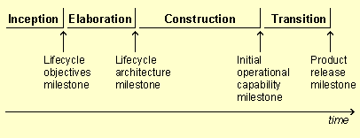
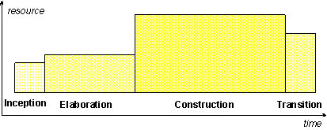
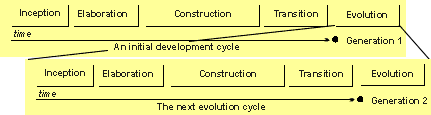

Phases
Phases
Phases
فاز های RUP فاز ها و نقاط کلیدی یک پروژه از دید مدیریت سیستم، چرخه زندگی یک نرمافزار با استفاده از متدولوژی RUP در طول زمان به ۴ فاز متوالی اصلی تقسیم میشود که هر فاز با یک نقطه کلیدی (milestone) به پایان میرسد (شکل بالا). در پایان هر فاز، یک ارزیابی انجام میشود (فعالیت : ارزیابی نقطهکلیدی چرخه نرم افزار) تا مشخص شود که آیا اهداف فاز بهدست آمدهاند یا خیر. اگر نتیجه ارزیابی رضایتبخش باشد، پروژه به فاز بعدی منتقل میشود. برنامهریزی (schedule) و فعالیت (effort) انجام شده در فاز های مختلف RUP یکسان نیستند. هر چند این تفاوتها عمدتا به پروژه بستگی دارند، اما برنامه ریزی و فعالیت انجام شده در فاز های مختلف یک پروژه با اندازه متوسط معمولا به صورت زیر توزیع میشود.
این موضوع به صورت گرافیکی در شکل زیر نشان داده شده است :
 RUP دارای ابزار هایی (Tools) است که به کمک آنها میتوان، برخی از فعالیت های فاز ساخت را به صورت خودکار انجام داد که برای مثال میتوان به نرم افزار Rational Rose اشاره کرد. در نتیجه، به کمک این ابزار ها، فاز ساخت (Construction) کوتاهتر از فاز شناخت (Inception) و معماری (Elaboration) میشود. نخستین باری که این ۴ فاز به ترتیب برای پروژهای انجام شود، یک چرخه توسعه (Development Cycle) به وجود میآید و در هر بار اجرا، محصول یا نسلی (generation) از نرمافزار به وجود میآید. تا زمانی که پروژه متوقف نشده باشد، پروژه با انجام فاز های شناخت، معماری، ساخت و انتقال رشد میکند، اما این بار میزان تاکید روی فاز های مختلف متفاوت است. به چرخه های بعدی در اصطلاح چرخه های تعاملی (evolution cycles) گفته میشود.  چرخه های تکاملی ممکن است با بهبود های پیشنهاد شده توسط کابران، تغییر در زمینه کابر، تغییر در تکنولوژی مورد نظر، واکنش به رقبا و غیره ایجاد و اجرا شوند. چرخه های تکمالی معمولا فاز های شناخت و معماری کوتاهتری دارند. چون معماری و تعریف مصحول اولیه در چرخه های توسعه قبلی مشخص شده است. مگر در مواردی که محصول یا معاری دوباره تعریف شوند. |
|
|
Rational Unified
Process
|